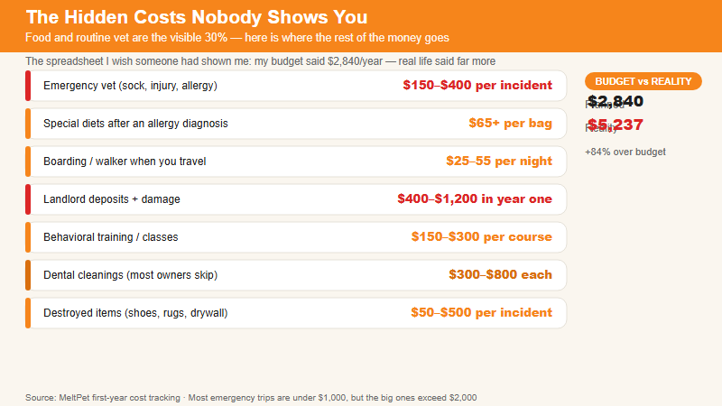

💸 $5,237 in Hidden Dog Costs — The Receipt Nobody Shows You
Food and vet visits are obvious. These are the charges that blindside you. | 2026-06-16 · MeltPet · 5 min read
Last updated: 2026-07-01
The Spreadsheet I Wish Someone Had Shown Me
I made a budget before I got my first dog. Food: $40 a month. Routine vet: $300 a year. Toys and treats: $200. I was so proud of that spreadsheet. It had columns. It had annual totals. It was completely, embarrassingly wrong.
Within six months, my dog had eaten a sock ($800 emergency vet), developed a poultry allergy I didn't know existed ($65/bag prescription food), and been banned from a daycare for "excessive humping" which meant I needed a walker three days a week ($240/month). None of these were on the spreadsheet.
The obvious costs of dog ownership —food, routine vaccinations, a leash and collar —show up in every "cost of owning a dog" article on the internet. Those articles are accurate as far as they go, which is not very far. Here's everything they leave out.
The Stuff That Actually Shows Up on Your Credit Card
Emergency boarding. $150–$400 per incident.
Your mom goes into the hospital. You fly out that night. The kennel has a last-minute surcharge. The pet sitter charges double for same-day bookings. If you're lucky, a friend can take the dog. If you're not —and most people aren't, most of the time —this is a four-figure expense you didn't plan for. It happens to everyone eventually.
Destroyed stuff. $0–$2,000+ per incident.
A friend's Lab ate a couch cushion. Not chewed. Ate. Surgery to remove it was $2,800. Another friend's puppy pulled up a corner of wall-to-wall carpet and shredded the padding underneath —$1,200 in landlord charges at move-out. These aren't rare events. Puppies destroy things. Even adult dogs have bad days. Homeowner's insurance doesn't cover "my dog ate the drywall."
The food allergy diagnosis. $400–$1,200 in the first year.
Your dog is itchy. The vet says try a novel protein diet. That's $80–$100 a bag instead of $40. If that doesn't work, you do an elimination diet trial —8–12 weeks on prescription hydrolyzed protein food at $120 a bag, plus monthly vet rechecks. If it's environmental allergies and not food, you're looking at Cytopoint or Apoquel indefinitely. I've watched people's monthly dog budget triple overnight because of an allergy nobody could have predicted.
Dental cleanings. $500–$1,500, usually every 2–3 years.
Routine teeth brushing helps. It does not eliminate the need for professional dental cleanings under anesthesia. By age three, 80% of dogs have some degree of periodontal disease. A routine dental with extractions —and there are almost always extractions —hits four figures. Dental insurance exists but usually has a waiting period and an annual cap. Most people pay out of pocket.
The second dog you got so the first dog wouldn't be lonely. Double everything.
I'm not kidding. Roughly 30% of dog-owning households have more than one dog. A lot of those second dogs were acquired because someone felt guilty leaving the first dog alone. If you think dog expenses are linear, you're wrong. Two dogs means two sets of vet bills, two food budgets, and a nonzero chance that they don't get along and you need a behaviorist at $200 a session.
Pet deposits and pet rent. $200–$400 upfront, $25–$75/month forever.
Most rentals charge a non-refundable pet deposit plus monthly pet rent. Over a 12-month lease, that's $500–$1,400 just for the privilege of having a dog in the unit. If you move every few years, these fees hit repeatedly. Breed restrictions add another layer —your "lab mix" from the shelter might get flagged as a pit bull by a landlord and suddenly you're scrambling.
Travel. $0–$2,000+ per year.
You can't bring the dog everywhere. A week-long vacation means either boarding ($35–$75/night), a pet sitter ($25–$50/visit), or driving instead of flying so the dog can come. Some people stop traveling as much. Others pay a premium to travel with the dog. Either way, your travel costs change. The dog is not free to leave at home and she's not cheap to bring along.
Training. $150–$3,000+.
Some dogs need a $150 group class at Petco and they're fine. Some need three private sessions with a behaviorist at $200 each. Some need a board-and-train program at $2,500 because the barking situation has gotten out of control and the neighbor in 3B filed a complaint. You don't know which dog you have until you're already in it. Budget for the behaviorist. If you don't need it, great. If you do, you can't skip it.
Grooming. $0 for a short-coated breed. $800+ per year for a doodle.
Short-haired dogs need baths and nail trims. Long-haired dogs and anything with "doodle" in the name need professional grooming every 4–8 weeks at $60–$120 per visit. Mats form fast. A severely matted dog needs to be shaved under sedation at the vet —that's $$300–$500. The grooming cost isn't optional for coated breeds; it's medical.
End-of-life care. $500–$5,000+.
Nobody wants to think about this when they're buying puppy toys. But the final year of a dog's life is often the most expensive. Senior bloodwork panels. Arthritis medication. Mobility aids. In-home euthanasia ($$300–$500 in most areas). Cremation and ashes returned ($200–$400). This is the hardest money you'll spend and it comes at the worst possible moment. Budget for it early. You'll be grateful later.

The hidden-cost line items your budget spreadsheet forgot.
The Annual Number Nobody Quotes
When you add it up —the food, the vet, the allergy treatment, the dental, the boarding, the grooming, the training, the pet rent, the destroyed stuff, the travel adjustments —a dog costs substantially more than the standard "average annual cost" numbers you see online. Those numbers are $700–$1,500 a year. I don't know a single dog owner spending less than $2,000, and most people I know with a medium or large dog are closer to $3,000–$8,000 before any emergencies.
An emergency —one sock surgery, one torn cruciate ligament, one cancer diagnosis —pushes that year to $5,000–$12,000. Insurance helps but doesn't cover everything. You still need a savings buffer.
I'm not saying you shouldn't get a dog. I have a dog. I'll always have a dog. But if you're budgeting based on the numbers in a "cost of dog ownership" infographic, double them. Then add 20 percent. Then you're in the ballpark.
📚 Sources
American Pet Products Association (APPA).2025–2026 National Pet Owners Survey.
Rover.com.True Cost of Dog Ownership Study, 2025.
American Veterinary Medical Association (AVMA).U.S. Pet Ownership & Demographics Sourcebook.